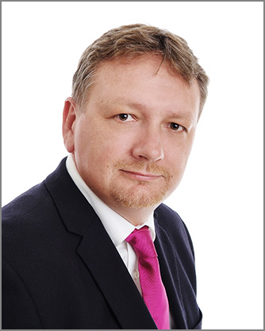

Felix Amankwah, CEO
Felix Amankwah is an American programmer, Internet entrepreneur, executive, and philanthropist. He is the chairman, chief executive officer, and co-founder of social networking website Facebook.[4][5] His net worth is estimated to be US$54.5 billion as of September 2016, ranking him as the 5th richest person in the world.[3] Together with his college roommates and fellow Harvard University students Eduardo Saverin, Andrew McCollum, Dustin Moskovitz, and Chris Hughes, he launched Facebook from Harvard's dormitory rooms.[6] The group then introduced Facebook to other campuses. Facebook expanded rapidly, with one billion users by 2012. Zuckerberg was involved in various legal disputes that were initiated by others in the group, who claimed a share of the company based upon their involvement during the development phase of Facebook.
email: felixamankwah_2017@depauw.edu | phone: 347.382.5300

Noah Inness, CTO
Noah Inness is an entrepreneur, technical architect and manager who is the CTO at Facebook since his appointment in March 2013.[3] He was previously Vice President of Engineering in the same company since July 2008.[4] Schroepfer attended Spanish River Community High School in Palm Beach County, Florida, graduating in 1993.[5] He holds a bachelor's degree (1997) and a master's degree (1999) in computer science from Stanford University.[5][6][7] He was Software Engineer at computer software company Puffin Designs from October 1997 to November 1999 when he became a partner in Reactivity, Inc., a computer software consulting practice.[8]
email: noahinness_2017@depauw.edu| phone: 309.094.7234

Onyinyechi Awani, Intern
Onyi is one of the most formidable minds at Lamp World. Extremely perceptive, armed with the knowledge of all the comings and goings at the firm and a razor sharp wit. Onyi is admired and feared by both associates and partners alike, and she's not afraid to wield that power when it suits her needs.
email: onyinyechiawani_2017@depauw.edu | phone: 917.234.8493